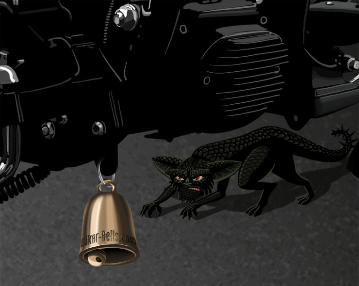
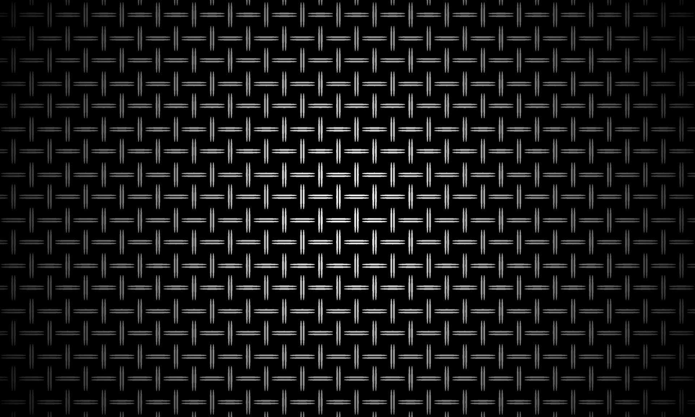

<html lang="en"></html>
  <head>
    <meta charset="UTF-8" />
    <meta http-equiv="X-UA-Compatible" content="IE=edge" />
    <meta name="viewport" content="width=device-width, initial-scale=1.0" />
    <title>Document</title>
    <link href="https://fonts.googleapis.com/css2?family=Montserrat:wght@400;500;700&display=swap" rel="stylesheet">
    <link rel="stylesheet" href="https://fonts.googleapis.com/css2?family=Material+Symbols+Outlined:opsz,wght,FILL,GRAD@20..48,100..700,0..1,-50..200" />
    <link rel="stylesheet" href="../css/main.css" />
  </head>
  <body>
    
    <header>

      <a href="https://deltarealesate.com">
      <h1><span></span>SP </span>Bells</h1></a>
      <span class="material-symbols-outlined shopping_bag">
        shopping_bag
        </span>
        <nav class="desk-ul">
          <ul>
            <li>
              Productos
              <div class="productos">
                <ol>
                  <a href="https://deltarealesate.com/cruzmalta"><li>Cruz malta</li></a>
                  <a href="https://deltarealesate.com/ruta66"><li>Ruta 66</li></a>
                  <a href="https://deltarealesate.com/cruzalada"><li>Cruz alada</li></a>
                 <a href="https://deltarealesate.com/lucky13"> <li>Lucky 13</li></a>
                 <a href="https://deltarealesate.com/ladyrider"> <li>Lady Rider</li></a>
                 <a href="https://deltarealesate.com/unoporciento"> <li>Uno por ciento</li></a>
                 <a href="https://deltarealesate.com/live"> <li>Live</li></a>
                 <a href="https://deltarealesate.com/paz"> <li>Paz</li></a>
                 <a href="https://deltarealesate.com/manopla"> <li>Manopla</li></a>
                 <a href="https://deltarealesate.com/calavera"> <li>Calavera</li></a>
                 <a href="https://deltarealesate.com/motocrucis"> <li>Moto crucis</li></a>
                </ol>
              </div>
            </li>
            <a href="https://deltarealesate.com/tienda"><li>Tienda</li></a>
            <a href="https://deltarealesate.com/historia"><li>Leyenda</li></a>
          </ul>
        </nav>
    </header>
  <label class="hamburger-menu">
    <input type="checkbox" id="menu-toggle" />
  </label>
  <aside class="sidebar">
    <nav>
      <div><a href="https://www.deltarealesate.com">Inicio</div></a>
      <div class="headerline"></div>
      <div>Tienda</div>
      <div class="headerline"></div>
      <div>La leyenda de la campana</div>
      <div class="headerline"></div>
    </nav>
  </aside>
  <article class="historia">
    <h2>La leyenda de la campana</h2>
    <p>
        Érase una vez, a principios del siglo XX en EE. UU., un viejo motociclista con barba canosa estaba paseando en su chopper por una carretera rural en una noche clara y tranquila. De repente, su moto empezó a vibrar y a derrapar, llevándolo a caer al suelo. Mientras se recuperaba, notó una sombra sospechosa y se encontró rodeado de gremlins malvados que saboteaban vehículos. Gritando y tratando de ahuyentarlos, el motociclista vio que el sonido de una campana distante asustó a los gremlins, que huyeron. Al regresar a casa, su Vieja Dama le dio una campana de la suerte para su moto, que desde entonces nunca volvió a tener problemas con gremlins. Así nació la Campana del Motociclista.
    </p>
    <h3>¡No le des oportunidad a los gremlins!</h2>

    
    <h2>Origen de la campana</h2>
    <p>No está completamente claro de dónde provienen exactamente las Campanas del Motociclista, pero hay dos explicaciones muy plausibles para esta tradición.

        La primera explicación es que, cuando las motocicletas se hicieron accesibles para las masas, muchas personas colgaban una pequeña campana en sus mopeds para alertar si alguien intentaba mover la moto, lo que ayudaba a disuadir a los ladrones y, con el tiempo, la tradición se volvió popular.
        
        La segunda explicación está relacionada con los accidentes con animales salvajes. Se dice que el sonido de una pequeña campana es desagradable para los animales y los alerta de la aproximación de una moto, lo que puede prevenir accidentes, especialmente de noche o en niebla.
        
        Independientemente de si las Campanas del Motociclista protegen por suerte o por razones prácticas, lo importante es que un regalo dado de corazón siempre es valioso y apreciado por el receptor.</p>
</article>
  <div class="container">
    
    
    
    
    

    </div>

<footer>
  <div class="redes">Redes Sociales</div>
  <div class="footerline"></div>
  <picture>  <a href="https://www.facebook.com/profile.php?id=61552309236999" target="_blank">
      
</a>
<a href="https://www.instagram.com/bairesrealestate/" target="_blank">
  
  
</a>
<a href="https://wa.link/jkkn0f" target="_blank">
  
  
</a></picture>

  <p>SP Bells</p>
</footer>
<script src="../script.js"></script>
  </body>
</html>